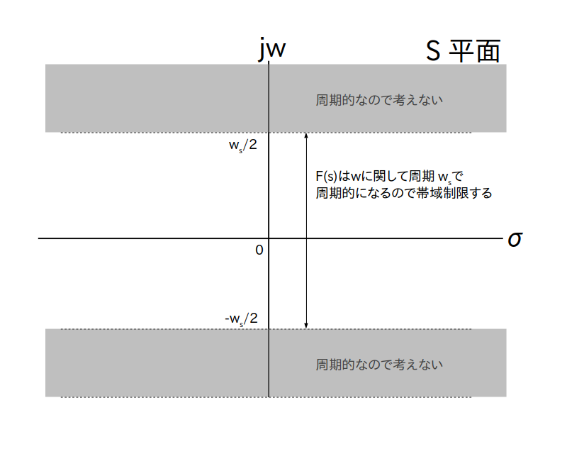

このページでは Z 変換が時間領域ディジタル信号 $f[i]$ に対するラプラス変換であることを説明します。
サンプリング元のアナログ信号を $f(t)$ とし、$\tau$ [秒]をサンプリング間隔とすると、サンプリングのアクティビティで説明した様に、
\begin{align*} f[i] = f( \tau \cdot i ) \end{align*}
で表されます(図1)。
まず $f[i]$ をアナログ信号とみなして直接ラプラス変換することを考えます。
つまり
というアナログ信号 $f'(t)$ のラプラス変換が $f[i]$ のラプラス変換であるとします。
ところがこれを実際に計算してみると積分の幅が0であるため
\begin{align*} \textrm{F}(s) &= \int_0^\infty f'(t) \cdot \textrm{e}^{-st} dt \\ &= \sum_{i=0}^{\infty} \int_{\tau \cdot i}^{\tau \cdot i} f[i] \cdot \textrm{e}^{-st} dt \\ &= \sum_{i=0}^{\infty} \left \{ f[i] \cdot \int_{\tau \cdot i}^{\tau \cdot i} \textrm{e}^{-st} dt \right \} \\ & = \sum_{i=0}^{\infty} 0 \\ & = 0 \end{align*}という様にラプラス変換の結果が 0 になってしまって上手く行きません。
さて積分の幅が 0 であったことが失敗の原因ですので、次は図2の様な窓関数 $g(t)$ を使い、図3の様に $f(t)$ をサンプリング間隔 τ 秒おきに幅 $2\epsilon$ で切り出して作成した信号に対してラプラス変換する事を考えます。
$\epsilon$ を微小な正の定数とする

$g(t)$ を平行移動した $g(t-\tau\cdot i)$ を $f(t)$ にかける

ただし $\epsilon$ が小さいとやはり積分結果がほぼ 0 になってしまうので、積分した結果が0にならないように充分大きい任意の正定数 $\alpha > 0$ をあらかじめ $f(t)$ に掛けてゲイン調整をしておきます。
以上をまとめると
\begin{align*} f'(t) = \begin{cases} \alpha \cdot f(t) &, ( \tau \cdot i - \epsilon \leq t \leq \tau \cdot i + \epsilon ) \\ \\ 0 &, (それ以外の時刻) \end{cases} \end{align*}というアナログ信号 $f'(t)$ に対してラプラス変換を行います。
すると今回は
\begin{align*} \textrm{F}(s) &= \int_0^\infty f'(t) \cdot \textrm{e}^{-st} dt \\ &= \sum_{i=0}^{\infty} \left \{ \alpha \cdot \int_{\tau \cdot i - \epsilon}^{\tau \cdot i + \epsilon} f(t) \cdot \textrm{e}^{-st} dt \right \} \\ \end{align*}
が得られます。
ここで(本当はいろいろ条件が必要なのですが面倒なので全部条件を満たしていると考えることにすると)積分の平均値の定理より
\begin{align*}
\int_{\tau \cdot i - \epsilon}^{\tau \cdot i + \epsilon} f(t) \cdot \textrm{e}^{-st} dt
= 2\epsilon \cdot f(\xi_i) \cdot \textrm{e}^{-s \xi_i}
\end{align*}
を満たす $\xi_i$ が
\begin{align*} \tau \cdot i - \epsilon \leq \xi_i \leq \tau \cdot i + \epsilon \end{align*}
の範囲に必ず存在します。
よってこの式を上の $\textrm{F}(s)$ に代入して
さらにゲイン調整用のパラメータ $\alpha$ は任意の正整数だったので $\alpha = 1/2\epsilon$ を代入して
\begin{align*} \textrm{F}(s) = \sum_{i=0}^{\infty} \left \{ f(\xi) \cdot \textrm{e}^{-s \xi_i} \right \} \\ \end{align*}あとは $\epsilon \rightarrow 0 $ とすることで $\xi_i \rightarrow \tau \cdot i $ となりますので、
\begin{align*} \textrm{F}(s) &= \sum_{i=0}^{\infty} \left \{ f( \tau \cdot i ) \cdot \textrm{e}^{-s \cdot \tau \cdot i} \right \} \\ &= \sum_{i=0}^{\infty} \left \{ f[i] \cdot \textrm{e}^{-s \cdot \tau \cdot i} \right \} \end{align*}
が得られます。
この式をディジタル信号 $f[i]$ のラプラス変換と定義します。
$\tau$ [秒]をサンプリング間隔、$s = \sigma + j \cdot w$ を S 平面上の任意の点としたとき、
\begin{align*} \textrm{F}(s) = \sum_{i=0}^\infty \{ f[i] \cdot \textrm{e}^{- s \cdot \tau \cdot i} \} \end{align*}ところで上の式に $s = \sigma + j \cdot w$ を代入し
\begin{align*} \textrm{F}(\sigma + j \cdot w) &= \sum_{i=0}^\infty \{ f[i] \cdot \textrm{e}^{- ( \sigma + j \cdot w) \cdot \tau \cdot i} \} \\ &= \sum_{i=0}^\infty \{ f[i] \cdot \textrm{e}^{- \sigma \cdot \tau \cdot i} \cdot \textrm{e}^{- j \cdot w \cdot \tau \cdot i} \} \end{align*}さらに$w_s$ をサンプリング角周波数としたとき、 $\tau = 2\pi/w_s$ を最後の項に代入すると
\begin{align*} \textrm{F}(\sigma + j \cdot w) &= \sum_{i=0}^\infty \left \{ f[i] \cdot \textrm{e}^{- \sigma \cdot \tau \cdot i} \cdot \textrm{e}^{- j \cdot 2 \pi \cdot \frac{w}{w_s} \cdot i} \right \} \end{align*}
という式が出てきます。
ここで $k$ を任意の整数とすると
が成り立ちます。
つまり
「ディジタル信号 $f[i]$ のラプラス変換 $\textrm{F}(s)$ は S 平面上で $w$ に関し周期 $w_s$ で周期的」
になりますので、$-w_s/2 \leq w \leq w_s/2$ の範囲に帯域を制限して考えることが出来ます(図4)。

さてここで
\begin{align*} z &= \textrm{e}^{ s \cdot \tau } \\ &= \textrm{e}^{ \sigma \cdot \tau } \cdot \textrm{e}^{ j \cdot w \cdot \tau } \end{align*}
という座標変換を考えます。
この座標変換によって作られる平面のことを「Z 平面」と呼びます。
ここで $z$ は絶対値が $|z| = \textrm{e}^{ \sigma \cdot \tau }$、偏角が $\angle z = w \cdot \tau$ の極形式になっています。
また $\tau = 2\pi/w_s$ より偏角の範囲は $-\pi \leq w \cdot \tau \leq \pi$ となりますので、S平面上の点 $s$ と Z 平面上の点 $z$ は 1 対 1 で対応しています(図5)。
座標変換 $z = \textrm{e}^{ s \cdot \tau }$ によって S 平面と Z 平面上の点は 1 対 1 で対応づけられる

あとはラプラス変換 $\textrm{F}(s)$ に $z = \textrm{e}^{ s \cdot \tau }$ を代入すれば、Z平面上の複素関数
\begin{align*} \textrm{F}(z) = \sum_{i=0}^\infty \{ f[i] \cdot z^{-i} \} \end{align*}
つまり Z 変換が得られます。
逆に言えば、$\textrm{F}(z)$ に $z = \textrm{e}^{ s \cdot \tau }$ を代入するとラプラス変換 $\textrm{F}(s)$ になります。
ところで、 $\textrm{e}^{-s \cdot \tau \cdot i}$ の逆ラプラス変換は $\delta(t - \tau \cdot i)$ ですので、
\begin{align*} \textrm{F}(s) = \sum_{i=0}^\infty \{ f[i] \cdot \textrm{e}^{- s \cdot \tau \cdot i} \} \end{align*}を逆ラプラス変換すると
\begin{align*} \mathcal{L}^{-1}\{ \textrm{F}(s) \} &= \sum_{i=0}^\infty \{ f[i] \cdot \delta(t - \tau \cdot i) \} \\ &= \sum_{i=0}^\infty \{ f(t) \cdot \delta(t - \tau \cdot i) \} \end{align*}
になります。
つまり Z 変換は
「アナログ信号 $f(t)$ に対しサンプリング間隔 $\tau$ 秒おきにインパルス信号(デルタ関数)をかけた信号をラプラス変換して得られる」
とも言えます。
ちなみにサンプリング間隔 $\tau$ 秒おきにインパルス信号を並べた信号のことを「くし型関数」と呼び、信号処理分野では理想的なサンプラーモデルとして何か計算する時に良く使われています。